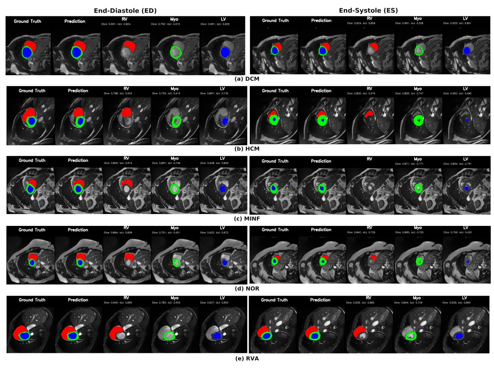
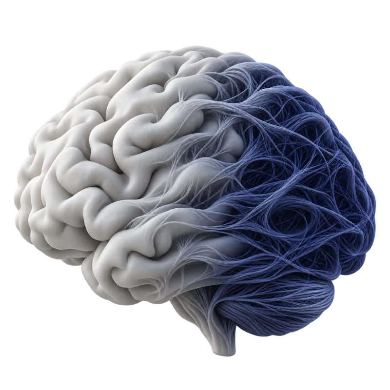
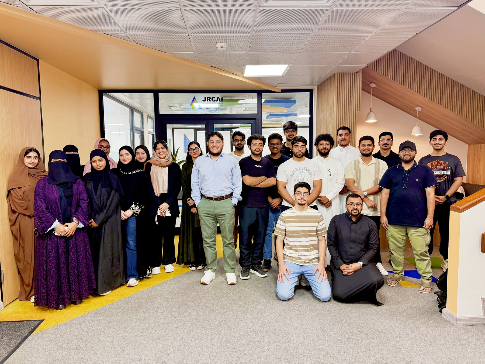

PULSE
A more complete picture of the heart.
Connecting cardiac segmentation, diagnosis, and clinical reporting in one model, across imaging modalities.

Artificial intelligence research at KFUPM
We study how machines see, reason, and learn, connecting multimodal intelligence with real problems in healthcare and beyond.

The questions we explore
An image. A sentence. A clinical decision. We bring different kinds of information together to help machines understand more of the world.
Learning representations across images, language, and 3D data to help machines understand more of the world.
Explore SegVLMMedical image analysis, organ segmentation, and multimodal learning for clinical decision support.
Explore PULSEUnderstanding facial expressions, emotion, and behavior to build more useful human-AI interactions.
Explore MultiviewVLMExplainability, robust perception, and agentic systems that can plan, reason, and use tools.
Explore Attack-AwareSelected research
A more complete picture of the heart.
Connecting cardiac segmentation, diagnosis, and clinical reporting in one model, across imaging modalities.


The people of BRAIN Lab
We are a community of researchers at King Fahd University of Petroleum & Minerals, led by Prof. Dr. Muzammil Behzad.
Meet the peopleWe welcome researchers and collaborators from academia and industry.
Email the lab
muzammil.behzad@kfupm.edu.saFind us
King Fahd University of Petroleum & Minerals
Dhahran, Saudi Arabia